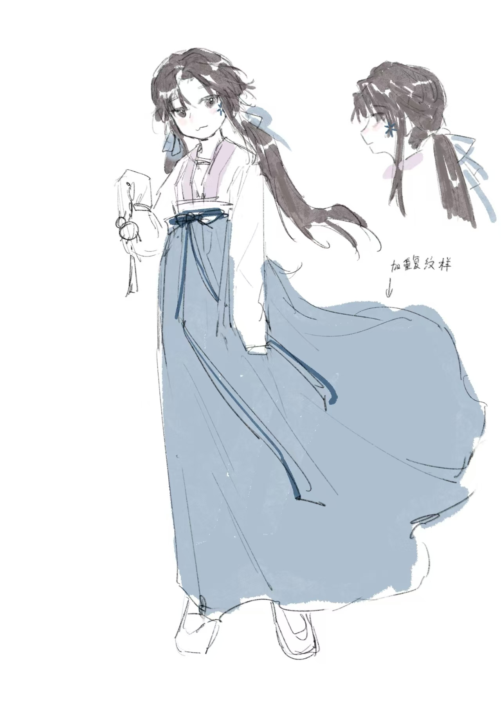

"每一道蓝痕都是活着的记忆，而我，不过是染缸里浸泡太久的布料"

自贡百年扎染世家"青蓝坊"唯一传承者，美院染织专业毕业生
素色棉麻衣衫，长发用龍蓝扎染布条束起，指尖常年染有洗不净的蓝痕
坚忍：独自支撑濒临倒闭的青蓝坊，每日工作16小时维持生计
细腻：能通过布料肌理判断染料配比，对色彩极度敏感
掌握217种古法植物染料配方（可凭气味辨别发酵程度）
独创"呼吸染法"：通过调节呼吸频率控制布料吸色均匀度
因心结无法施展家传绝技"千叠血引"
盐夏内心深处认为母亲因扎染技艺积劳成疾而死，对家传秘技具有复杂矛盾情感。这种情感阻碍了她完全掌握家族最高技艺"千叠血引"。
更不为人知的是，家族女性继承者血脉中潜伏着"染疾"，25岁后身体会逐渐结晶化。这种病症需要染灵之力压制，但随着染灵力量衰弱，盐夏的症状已经开始提前显现。
盐夏与染灵首领绞缬有着微妙的共生契约关系。染灵靠传承者的信念存续，而传承者则需要染灵的力量压制染疾。
最初，盐夏对这位千年染灵充满戒备，但随着时间推移，她逐渐理解绞缬守护传统技艺的执着。然而，她对施展需要消耗生命力的高阶技艺仍心存抗拒。
青蓝坊面临着三重危机：祖传靛蓝灵泉被开发商填埋；母亲去世导致高阶技艺传承断裂；近十年无人施展完整古法，导致染灵力量衰弱。
盐夏必须在染疾全面发作前找到解决办法，否则不仅会失去生命，千年传承的扎染技艺也将永远消失。